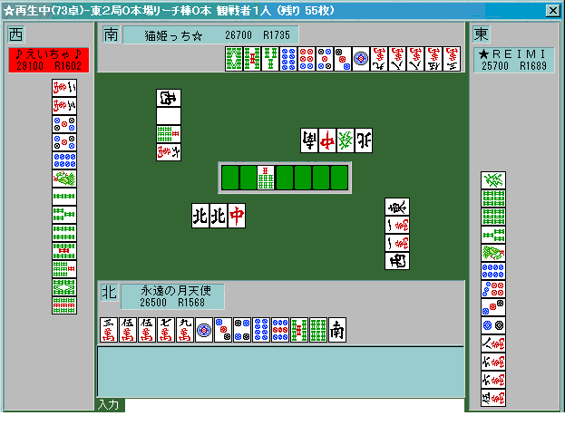
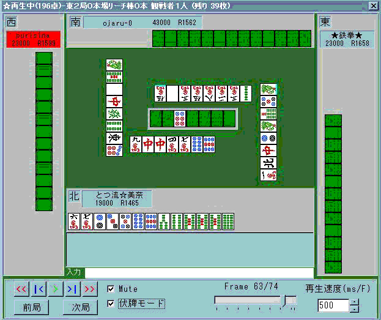

★☆ラグに関する読み１☆★
2000/4/8 み〜な
皆さんはラグという言葉をご存知でしょうか？
東風で麻雀を打つにあたって必要不可欠なものです＾＾
具体的に説明すると、ポン、チー、カン、ロンなどの選択画面が出るときに
画面が一時停止する現象のことを言います。
こちらからは選択できるのに対し、向こうからは
画面が一瞬止まるわけですね。
ああ、なんだ。 そのことか。 と、お嘆きのあなたへ。
そのラグを使っていろいろ読んでいけるのですよ＾＾
ちなみに鳴き無しボタンを押せば”自分にかかるロン以外のラグ”を
全て切ることができます。
通常、私は平和手ならラグＯＦＦ。親の時や混一色の時などはラグＯＮ
（ポン、チーできなくなるから当然ですね。(笑)）にしています。
特に自分が平和手でのラグ読みは基本といえます。
では説明していきましょう。
１．ラグを使った面子選び（相手の手の中の対子牌を読む）
まず最初にラグを使った面子選びを説明していきましょう。
あなたはリャンメンターツとカンチャンターツならどちらを選択しますか？
当然リャンメンですが、時にはリャンメンターツを早めに
処理した方がいい場合もあるのです。
では実際に見ていきましょう。

平場の東２局０本場。永遠の月天使こと私の手牌です。
平和手にしたかったので自風の北を落としたところですね。
そして４順目ツモ手前。（注：この時点で自分のラグは切っています）
上家のえいちゃさんの打６ｗでラグがかかりました。
この時点で自分のラグは切っているのでチーはありえません。
すなわち・・・誰かの手の中に（対面もしくは下家）
６ｗが２枚あるということです。
そして４順目。私は２ｐツモ。 さてあなたなら何を切りますか？
私はとりあえず打、南としました。
いろいろ意見が分かれるところでしょうが
この時点ではっきりと一つ言えるのは
”６ｗはあと１枚しか残ってない”ことです。
すなわち５７９のリャンカンは意味をなさない訳ですね。
５ｗを頭にした面子作りの構想を立てないといけません。
(この場合はあまりラグは気にしなくていいか・・・。(笑))
結局この局は、途中で３家からリーチが掛かり流局しましたが
あらかじめ
”つもることのできる牌を想定して打つ”
ことが大事だと言えます。
下手なリャンメンで待つよりも
時にはペンチャンやカンチャンを選択する方が有効といえます。
そして３や７の牌でラグが掛かった場合は他の孤立牌より
積極的にペンチャンを落としていきましょう。
例：上家の７ｐでポンのラグが掛かったので８-９ｐを落としていく等。
後記：実はこの後、えいちゃと麗美さんは
Ｒ２１００オーバーまで駆け上がった(爆)(２人ともこの時は新規でした)
猫りんもＲ１９００オーバーの雀士です。
それだけの面子と打たせてもらってる訳ですな。(^^ゞ
もう一つ見ていきましょう

これはどうでしょうか。
東風戦、親を倍満ツモで流された次の局です。
７順目までにいい感じで寄って来ていますが・・・
なんとドラの７ｐでラグが掛かってしまいました。
つまり私の受けであるペン７ｐはほぼ純カラ。
加えて対面か下家の手の中にはドラ２枚含みなわけです。
ドラ２枚だとダマでも３９００ありますね。
よって最善手はドラ受けの８-９ｐを落としつつ
対面と下家を警戒しながらここは回し打つ一手ではないでしょうか。
とつより：
記念すべき３人目の研究者の誕生です(笑)。
とつなんかはもう慣れすぎて空気のように(爆)利用している「ラグ」だが、改めて色々なラグの使い方を模索してみると良いかもしれない。
流局まぎわに、実は降りていてバラバラの手なんだが、ムダにドラポンを「迷ったフリ」してやって他家を降ろさせるとか(笑)。
続きも期待して待ってます(ﾉ´▽`)ﾉ⌒♪